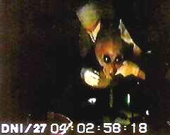

THE EXTRA-TERRESTRIAL
INTERVIEW
IS THIS CONTROVERSIAL VIDEO
FACT OR FICTION?

The color video footage, which lasts for a total of two minutes and fifty-five seconds, was apparently smuggled out of the secret Groom Lake "Area 51" facility in Nevada by a man referring to himself as "Victor".The video film depicts a Grey alien being interrogated at the government facility.
The footage first came to light on the Art Bell radio show on 13th March, 1997 when ufologist Sean David Morton was interviewed. Morton claimed the interrogation was fairly recent, sometime in 1996, and that renowned UFO expert Bob Dean apparently cried at the advanced screening of the film.
After claiming to have smuggled the film out of the Groom Lake facility in Nevada, Victor resolved to have the footage broadcast on network television as soon as possible in order to pulicly expose his claims. Victor believes that if his identity is discovered and he is subsequently assassinated, this would only further help to confirm the claims and authenticity behind the film.
Victor approached many television companies in his attempts to show the footage to the public. He first approached Fox TV, who turned him down after the problems in authenticity they had when the Roswell autopsy footage was shown by them. Fox felt they were being deceived for a second time. Eventually, in July 1996, Victor found an independent production company in Los Angeles, California called Rocket Home Pictures Productions, who agreed to produce a documentary based around the interview. Morton was brought in by Rocket's president, Tom Coleman, to give his views, thus being the first "outsider" to view the footage.
Contents Of The Video
After seeing the interview footage, Morton provides a chilling and detailed description of what he saw:
"The film was shot through a large plane of glass. There was no sound accompanying the images. The interview took place in a darkened room, lit with an eerie greenish glow, I could make out the silhouettes of two men, one dressed in military uniform with what appeared to be the stars on the epaulet of his jacket, and another more casually dressed man with his hand occassionally rubbing his forehead. They sat with their backs to the camera at one end of a long table, which was littered with wires, chords and microphones. There were what appeared to be medical devices. One in particular was blinking erratically, as if it was monitoring a very sick heart. And there sitting at the end of the table was a small, beige-skinned, black-eyed, bulbous headed creature, the like of which haunt the nightmares of thousands of unwilling abductees."
Morton made many references to the creature's sick appearance and condition. The alien made very jerky movements and kept bobbing up and down. He continued to describe the apparently distressed state the creature was in.
"Its skin was a pinkish beige, but the rest of the head looked purple and bruised, as if it had suffered severe contusions across the skull."
The contents of the tape grew progressively more disturbing. Towards the end of the tape, the creature goes into what appears to be violent spasms, as if it was having a seizure. The mouth of the alien opens and closes before a foam begins to come out. At that point the heart monitor (as described by Morton) begins to start jumping wildly, at which point the man in the military looking uniform signals to a couple of medics, who rush into the frame and aid the alien. As the doctors treat the alien, the footage suddenly comes to an abrupt end.
Fact or Fiction?
The authenticity of the footage is seen differently by many people. Morton is convinced the footage is real due to strong relationships with stories of alien abductees and the information on the footage in the lower part of the frame.
I myself am dubious, but do recognise the factors which lead to its possible true authenticity. The ET's appearance and features are recognisable as those mentioned by hundreds of abductees. Known as "The Gourdos" or the more feared "Grey" species, the alien is instantly recognisable by any Ufologist.
Another factor helping the video's authenticity is the information etched into the bottom of the video.
Victor's Reasoning
The best place to possibly determine the authenticity of the alien interview footage is the source, in this case a mysterious man known as Victor who won't reveal ANY specific details about himself in fear of discovery and assassination. If the man is telling the truth about his background at Area 51, then this is understandable. But how can the film be verified without any knowledge of it?
The producer of the documentary, Jeff Broadstreet, does know how Victor took the footage from the base. Victor told him he managed to obtain a copy of the video when in an unsupervised moment. Broadstreet stated the following:
"He was assisting in the process of downloading a large amount of video analogue tape to storage on DVD or digital video disc."
He further explains that Victor deliberately removed the audio track to protect the identity of the men in the video and to also help protect his own anonymity. Victor also told the producer that he thought the man on the left, who is seen with his hand to his head during much of the segment, is a military telepath apparently used to assist in communication with the creature.
Since the creature is obviously in a great deal of distress, when Broadstreet asked if the creature died later, Victor replied cryptically, "I'm not sure, but I know it was retired from the interview process."
According to Victor, the contents of the removed audio track involved an attempt at trying to obtain some form of technological information from the alien about the coordinates of a ship or object. He does not know, or wouldn't tell, whether the alien was attending the interview voluntarily or against his will after he had been recovered from some UFO crash retrieval operation.